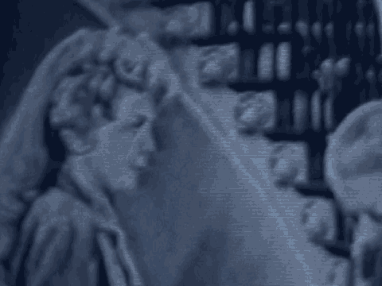

15 MR. GARCIA: Very briefly, Judge.
16 REDIRECT EXAMINATION
17 BY MR. GARCIA:
18 Q. Is it fair to say, Mr. Parrish, that you had a number of
19 conversations with the FBI about those tapes from the period
20 of November 1 through November 9?
21 A. That's a possibility, it is.
22 MR. GARCIA: I have nothing further.
23 THE COURT: Thank you. You may step down.
24 (Witness excused)
25 THE COURT: The government may call its next witness.
7854
1 MR. GARCIA: The government calls Wilford Baptiste.
2
3 (Continued on next page)
4
5
6
7
8
9
10
11
12
13
14
15
16
17
18
19
20
21
22
23
24
25
7855
1 WILFRED E. BAPTISTE,
2 called as a witness by the government,
3 having been duly sworn, testified as follows:
4 DIRECT EXAMINATION
5 BY MR. GARCIA:
6 Q. Sir, are you an agent with the FBI?
7 A. Yes, I am.
8 Q. And on November 1st, 2000, did there come a time that you
9 went to the Metropolitan Correctional Center?
10 A. Yes, I did.
11 Q. About what time was that?
12 A. About 10:30, 11:00 in the morning.
13 Q. After you got to the MCC where did you go, what unit, do
14 you recall?
15 A. Yes. 10 South, I believe.
16 Q. And did there come a time that day that you received a
17 videotape?
18 A. Yes, I did.
19 Q. Do you recall approximately what time that was?
20 A. About 11:30, maybe close to 12.
21 Q. Who was it that handed you that videotape?
22 A. Robert Perrish from MCC.
23 Q. And could you tell us just what happened when he gave you
24 that tape?
1